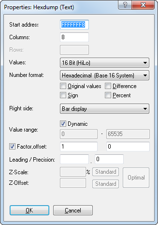

|
The dialog properties: Window: Hexdump (Menu Edit) |

  
|
|
The dialog properties: Window: Hexdump (Menu Edit) |
|

Start Address: |
The (virtual) address of the first upper-left cell. This can be a negative number if you shift the Hexdump to the left / right. |
Columns |
Enter the number of columns in this field. |
Values |
Here the number of bytes per cell and the byte organisation (LoHi/HiLo) can be edited. This also displays the value range. |
Number format |
You may choose between a binary, decimal and a hexadecimal display. |
Original |
Display the original values instead of the current version |
Sign |
Interpret the data as signed values |
Difference |
Instead of displaying the absolute value you may use this option to show the difference between the cell value and the original value. |
Percent |
Instead of displaying the cell value this option can display the relative difference between the cell value and the original value. |
Right side |
Optionally you may display the values as ASCII-Characters or bars. |
Value range |
If a bar display is chosen you may use these edit fields to enter the number range displayed in bar. If only the number 1-10 are used in the data you could optimize the display for this value range.
If you activate the Option "Dynamic", then WinOLS will automatically determine the best scale for any bar data. This will allow you to recognize more maps, especially in 16 and 32 bit mode, but it may cause two rows in a one map to have a different scale. Once a map is registered or recognized as potential map, WinOLS will automatically use the value range of the map for displaying its data in the hexdump. |
Factor & Offset |
Factor and offset help to display physical values by applying multiplication and addition before displaying them. The value is calculated by the following formula: DisplayedValue = Value*Factor + Offset |
Leading |
Number of visible digits before the dot. This can be useful for 32 values which can have lots of digits in theory and often don't use so many. Leave empty for automatic configuration. |
Precision |
The number of visible digits after the dot. |
Shortcuts
| Symbol bar: |
| Keyboard: | Alt+Enter |